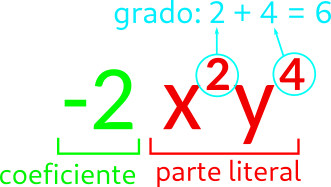

Una expresión algebraica es una combinación de letras, números y signos de operaciones.
Las letras
Resoltado de substituir una variable por un número en una expresión algebraica.
Enunciado: El doble de un número más uno
Expresión algebraica: \[ 2x + 1 \]
Valor númerico con si el número es 2: \[2 \cdot 2 + 1 = 5\]
1Indica la expresión algebraica que corresponde con los siguientes enunciados y calcola su valor numérico cuando \[ x=5 \]
2Crea un enunciado que se corresponda con las siguientes expresiones algebraicas y calcola el valor de estas expresiones cuando \[x = 3\]:
Expresión alxebraica formada por un producto de números e letras.

3Indica el coeficiente, parte literal y grado de los siguientes monomios:
Aquellos que tienen la misma parte literal
Ejemplo: \[4x^2y\] y \[20x^2y\] son semejantes
4Agrupa los monomios semejantes:
Solo podemos sumar/restar los monomios semejantes
\[ 4x^3y - 6x^3y + 5x^3y = (4-6+5) x^3 y = 3x^3y \]5Simplifica sumando o restando los siguientes monomios:
NO hace falta que sean semejantes.
Moltiplicamos/dividimos coeficiente y parte literal.
\[ 4x^2y \cdot 3x^3yz = (4 \cdot 3)x^{2+3}y^{1+1}z = 12x^5y^2z \]6Realiza las siguientes moltiplicaciones y divisiones de monomios:
Es una expresión algebraica formada por la suma de varios monomios.
7 Indica cuales son los términos, el término independiente (si tiene) y el grado de los siguientes polinomios. Calcola su valor numérico para \[x=3\].
8Dados los polinomios \[P(x) =4x^3 + 5x - 2\], \[Q(x)= 3x^2 +6x - 4\] y \[R(x) = x^4 - 2x^3 -x^2\], calcola:
\[ (3a) \cdot (2x + 3y + 5z) = 6ax + 9ay + 15az\]
9 Resuelve las siguientes moltiplicaciones de un monomio por un polinomio:
\[(2a + 3b) \cdot (x + y + z) = \\ = 2a \cdot (x+ y + z) + 3b \cdot (x+ y + z)\]
10Resolve las siguientes moltiplicaciones de polinomios:
11Calcola las siguientes potencias de polinomios:
12Calcola usando igualdades notables:
\[ (2x) \cdot (3xy + 7x^2) = 6x^2y + 14x^3 \]
\[ 6x^2y + 14x^3 = (2x) \cdot (3xy + 7x^2) \]
13Saca factor común en los siguientes polinomios:
14Realiza la división en caja de \[3278 : 41\]
ERealiza las siguientes divisiones de polinomios:
15Realiza las siguientes divisiones de polinomios:
16Realiza la división \[(4x^3 + 3x + 5) : (x - 4) \]
17Realiza las siguientes divisiones usando el método de Ruffini: